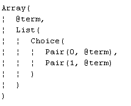
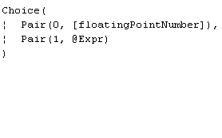
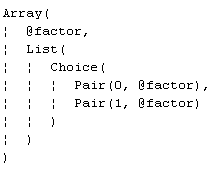

The API itself is quite small and simple, and is best understood in the context of a real example. Since the AST contains standard Scala data structures, an API client program is most conveniently written in Scala. A Java version of the same program is also shown for comparison.
Beginning release 6.01, the API has a function to convert the usual AST to a structure that uses only the JVM's own types. This enables seamless use from JVM languages other than Scala. The API is no longer awkward to use from those languages, and is equally usable from all JVM languages.
The specific API function to be used is illustrated in use in A Java Example below.
The following example uses VisualLangLab's minimal API to load and use the ArithExpr parser (from the Sample Grammars). The parser is then applied to the string "(3 + 5) / (8 - 4)" to obtain an AST that represents its structure. Functions that process the AST to evaluate the expression have been removed (but are shown later below) for clarity. Only the parts in red are from the VisualLangLab API. The parts in blue are using RegexParsers's usual interface.
import java.io.File
import vll.core.VllParsers
object ArithExprWithAPI {
// ... Other functions removed (see below) for clarity ...
def main(args: Array[String]) {
val vll = VllParsers.fromFile(new File("ArithExpr.vll"))
val parser = vll.getParserFor("Expr")
val parseResult = vll.parseAll(parser, "(3 + 5) / (8 - 4)")
parseResult match {
case vll.Success(resultAST, _) => println(evalExprAST(resultAST))
case vll.Failure(msg, where) => printf("Error: '%s' at line %d col %d%n",
msg, where.pos.line, where.pos.column)
}
}
}
The code shown below is the method to which main() passes the entire AST.
This code, and the other functions shown below, do not need the VisualLangLab API—they
merely process the AST produced by the API. But note how use of Scala pattern matching
is leveraged to analyze the AST.
private def evalExprAST(ast: Any): Float = ast match {
case Array(term, list: List[_]) =>
var result: Float = evalTermAST(term)
list.foreach(_ match {
case Pair(0, plusAST) => result += evalTermAST(plusAST)
case Pair(1, minusAST) => result -= evalTermAST(minusAST)
})
result
}Before proceeding further, review the structure of the ASTs of the three parser-rules (Expr, factor, and term). The AST structure of each grammar-tree is displayed by the GUI under Parse Tree (AST) Structure. All three ASTs are shown in Table-1 below.
| Table-1. AST Structure | ||
| Expr | factor | term |
|---|---|---|
|  |  |  |
The methods evalFactorAST and evalTermAST which
handle the ASTs from factor and term respectively are shown
below.
private def evalFactorAST(ast: Any): Float = ast match {
case Pair(0, f: String) => f.toFloat
case Pair(1, expr) => evalExprAST(expr)
}
private def evalTermAST(ast: Any): Float = ast match {
case Array(factor, list: List[_]) =>
var result: Float = evalFactorAST(factor)
list.foreach(_ match {
case Pair(0, multAST) => result *= evalFactorAST(multAST)
case Pair(1, divAST) => result /= evalFactorAST(divAST)
})
result
}
Observe that all these methods accept an Any argument that is
split into its constituent parts by pattern matching. The returned value is
a Float. For help in relating the code to the information
in Table-1 above, review AST and Action Code.html
Since the class VLLParsers extends
Parsers with
PackratParsers,
familiarity with those APIs is also useful.
The API also provides other variants of this function that may be convenient in other situations:
VllParsers.fromString(java.lang.String) - when the gramamar is available as a StringVllParsers.fromXml(scala.xml.Elem) - when the gramamar is available as an XML elementTo compile and run the program, proceed as follows.
The Java version shown below uses the same method names as the Scala version to facilitate comparison with the Scala version. The Scala libraries and the VisualLangLab JAR file must be on the classpath when you run this program. As with the Scala version, the grammar-file ArithExpr.vll is expected to be in the working directory.
As with the code in the previous example, the red parts are from the VisualLangLab API,
while the blue parts are from Scala's own standard API. Also observe the use of
the ast4jvm function (underlined) to convert the usual AST into one
that uses only standard JVM types (no Scala types).
This feature is new from version 6.01, and
enables parsers to be used from all JVM languages. The structure of this AST
is described in
JVM Language AST View.
import java.io.File;
import java.util.List;
import vll.core.VllParsers;
public class ArithExprJavaDemo {
static Float evalFactorAST(Object ast) {
Object[] pair = (Object[]) ast;
Float factorResult = -1f;
if (pair[0].equals(0)) {
factorResult = Float.parseFloat((String) pair[1]);
} else if (pair[0].equals(1)) {
factorResult = evalExprAST(pair[1]);
}
return factorResult;
}
static Float evalExprAST(Object ast) {
Object[] arr = (Object[]) ast;
Float exprResult = evalTermAST(arr[0]);
for (Object[] pair : (List) arr[1]) {
if (pair[0].equals(0)) {
exprResult += evalTermAST(pair[1]);
} else if (pair[0].equals(1)) {
exprResult -= evalTermAST(pair[1]);
}
}
return exprResult;
}
static Float evalTermAST(Object ast) {
Object[] arr = (Object[]) ast;
Float termResult = evalFactorAST(arr[0]);
for (Object[] pair : (List) arr[1]) {
if (pair[0].equals(0)) {
termResult *= evalFactorAST(pair[1]);
} else if (pair[0].equals(1)) {
termResult /= evalFactorAST(pair[1]);
}
}
return termResult;
}
public static void main(String[] args) {
String input = "(3 + 5) * (8 - 4)";
VllParsers vll = VllParsers.fromFile(new File("ArithExpr.vll"));
VllParsers.Parser exprParser = vll.getParserFor("Expr");
VllParsers.ParseResult<Object> parseResult = vll.parseAll(exprParser, input);
if (parseResult.successful()) {
Object ast = vll.ast4jvm(parseResult.get());
Float result = evalExprAST(ast);
System.out.println(result);
} else {
System.out.println(parseResult);
}
}
}
It is sometimes required to embed all resources (including the grammar-file)
within the program. The code below is another version of ArithExprWithAPI
with the grammar (extracted from the grammar-file) supplied as a string to a factory method.
import java.io.File
import scala.util.parsing.input.CharSequenceReader
import vll.core.VllParsers
object ArithExprWithAPI02 {
private def evalFactorAST(ast: Any): Float = ast match {
case Pair(0, f: String) => f.toFloat
case Pair(1, expr) => evalExprAST(expr)
}
private def evalTermAST(ast: Any): Float = ast match {
case Array(factor, list: List[_]) =>
var result: Float = evalFactorAST(factor)
list.foreach(_ match {
case Pair(0, multAST) => result *= evalFactorAST(multAST)
case Pair(1, divAST) => result /= evalFactorAST(divAST)
})
result
}
private def evalExprAST(ast: Any): Float = ast match {
case Array(term, list: List[_]) =>
var result: Float = evalTermAST(term)
list.foreach(_ match {
case Pair(0, plusAST) => result += evalTermAST(plusAST)
case Pair(1, minusAST) => result -= evalTermAST(minusAST)
})
result
}
def main(args: Array[String]) {
val vll = VllParsers.fromString(grammar)
val phraseParser = vll.phrase(vll.getParserFor("Expr"))
val parseResult = phraseParser(new CharSequenceReader("(3 + 5) / (8 - 4)"))
parseResult match {
case vll.Success(resultAST, _) => println(evalExprAST(resultAST))
case vll.Failure(msg, where) => printf("Error: '%s' at line %d col %d%n",
msg, where.pos.line, where.pos.column)
}
}
val grammar = """
<VLL-Grammar>
<Whitespace>\\s+</Whitespace>
<Comments></Comments>
<Tokens>
<Literal Name="RPAREN" Pattern=")"/>
<Regex Name="floatingPointNumber" Pattern="(\\d+(\\.\\d*)?|\\d*\\.\\d+)([eE][+-]?\\d+)?[fFdD]?"/>
<Literal Name="MULT" Pattern="*"/>
<Literal Name="LPAREN" Pattern="("/>
<Literal Name="MINUS" Pattern="-"/>
<Literal Name="DIV" Pattern="/"/>
<Literal Name="PLUS" Pattern="+"/>
</Tokens>
<Parsers>
<Parser Name="Expr">
<Sequence >
<Reference Ref="term" />
<Choice Mult="*">
<Sequence >
<Token Ref="PLUS" Drop="true"/>
<Reference Ref="term" />
</Sequence>
<Sequence >
<Token Ref="MINUS" Drop="true"/>
<Reference Ref="term" />
</Sequence>
</Choice>
</Sequence>
</Parser>
<Parser Name="factor">
<Choice >
<Token Ref="floatingPointNumber" />
<Sequence >
<Token Ref="LPAREN" Drop="true"/>
<Reference Ref="Expr" />
<Token Ref="RPAREN" Drop="true"/>
</Sequence>
</Choice>
</Parser>
<Parser Name="term">
<Sequence >
<Reference Ref="factor" />
<Choice Mult="*">
<Sequence >
<Token Ref="MULT" Drop="true"/>
<Reference Ref="factor" />
</Sequence>
<Sequence >
<Token Ref="DIV" Drop="true"/>
<Reference Ref="factor" />
</Sequence>
</Choice>
</Sequence>
</Parser>
</Parsers>
</VLL-Grammar>
"""
}